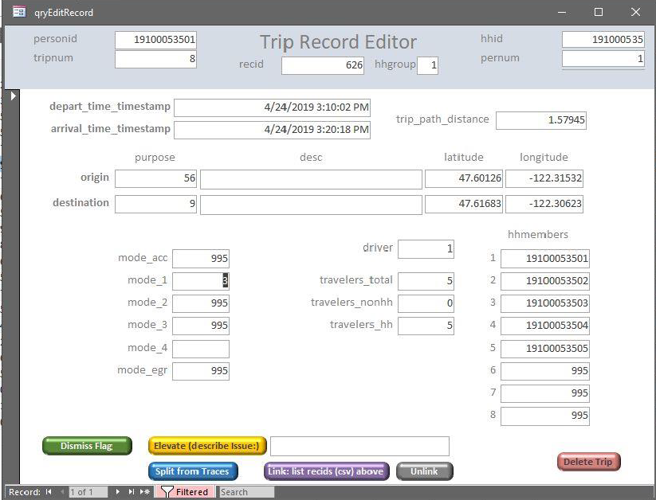

Fixie Shiny Development
to-do list
reference
goal for Fixie Shiny:
integrate existing SQL procedures and sprocs to the new shiny app
existing functionalities
- tabs: each tab shows the view for a particular error type or circumstance.
only persons with error flags will be displayed.
within each tab, each page shows a person and all their trips-
list of all columns
- tripnum
- modes_desc
- daynum
- depart_dhm
- arrive_dhm
- miles
- mph
- linear_miles
- linear_mph
- Error
- cotravelers
- origin_purpose
- dest_name
- dest_purpose
- duration_at_dest
- origin_coord
- dest_coord
- rc
- elevate_issue
-
- trip record editor
screenshot of trip record editor in Fixie Access

trip record editor in Fixie Access - buttons
- other invisible commands: turn them into visible buttons or additional features for the “new” button
- connect proedures for buttons and commands
- buttons
potential add-on functionalities
fix mode and purpose with information typed by user (ex.
dest_purpose_other)popup tables: additional recordsets for person trips
-
- code not working because 2023 trace data has different columns than before
-
Note
- see if it is possible to click on cells or show popup table by hovering over cells?
backend stuff
- main dataset:
HHSurvey.data2fixie- fixie_views.sql: script to create the dataset and each form for specific error type or circumstance
- after edit procedures:
- need to run an update query to save the edited data back to the DB
- Fixie procedures (
hhts_cleaning/Programmability/Stored Procedure): existing procedures for closing an editor and for each button - Rulesy procedures (rulesy_recalculate_after_edit.sq): trip num reordering/ linking/ error flag generation
App styling
- Edit trip modal dialog